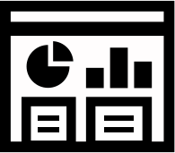

Research, test and validate
I live for the "aha" moment
Use cases, flow scenarios, nothing is more important than user feedback. Realizing that the mental model someone uses doesn't match your own pre-conceived notions is the key.
Research & Ideation
- Sketching
- Exploration and discovery
- Competitive research & analysis
- User journey maps
- Persona definitions
- Qualitative Research
- User interviews and shadowing
- Quantitative Research
- Periodic user surveys
Design & User Testing
- User Centered Design practices
- RITE Methods:
- Rapid
- Iterative
- Testing
- Evaluation
- Designing user-flows, wireframes, mockups, and prototypes
- Conducting user testing sessions
- Validating designs
- Agile-ready
Documentation
- Providing justification and rationales for design decisions
- Project and process reviews for further enhancements.
- What worked?
- What didn't?
- Delivering developer specifications and style guides